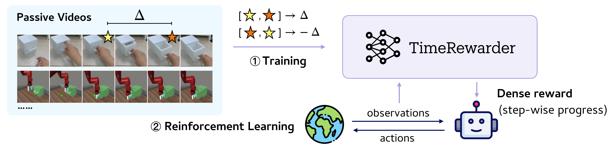
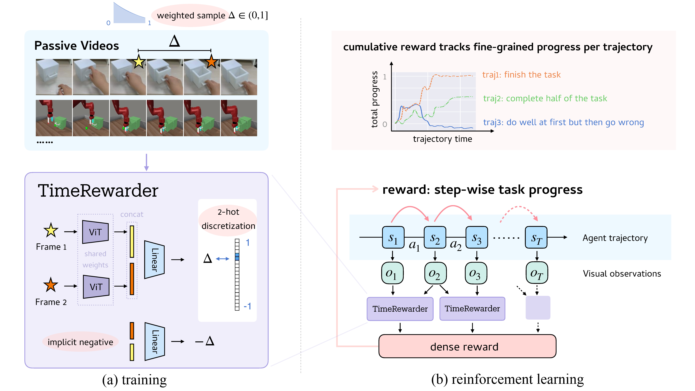
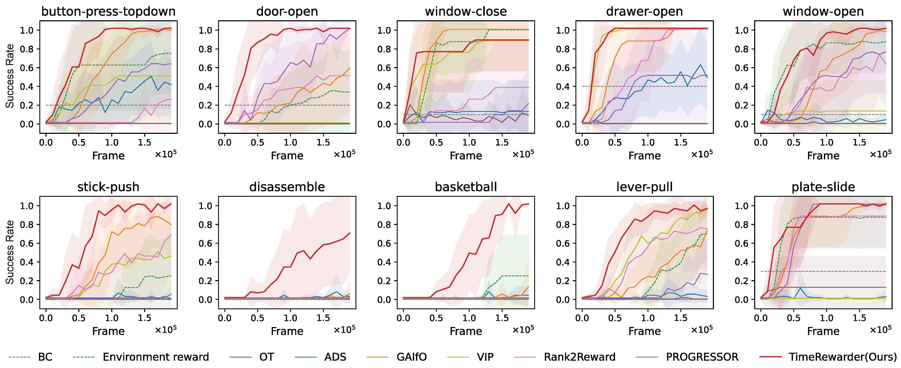
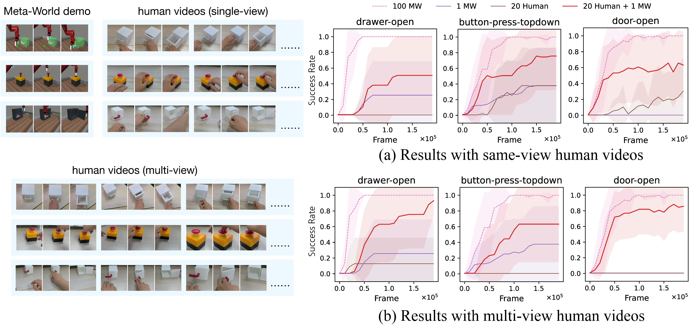

From Observation to Reward
Humans can often judge how close a task is to completion simply by watching it unfold, without knowing the exact actions being taken. Inspired by this intuition, TimeRewarder learns to infer task progress directly from videos of expert demonstrations.
At its core, TimeRewarder models the temporal distance between two frames: which one is closer to task completion, and by how much. These predictions translate naturally into dense, step-wise rewards, allowing reinforcement learning agents to evaluate whether they are making progress at every step.
By distilling progress signals from passive videos without action labels or manual supervision, TimeRewarder provides a scalable path toward guiding robots through complex tasks using nothing more than visual observation.
TimeRewarder: Training and Reward Generation
TimeRewarder is trained on expert videos in a self-supervised way to predict temporal distances between frames. The model learns which ordered pair of states represenst progress and which corresponds to regressions or suboptimal behaviors.
During reinforcement learning, TimeRewarder converts these predicted distances between consecutive observations into dense rewards. Positive distances indicate meaningful advancement toward task completion, while negative distances penalize unproductive actions.
Reinforcement Learning Performance
On 9 out of 10 Meta-World tasks, TimeRewarder achieved the highest final success rates and sample efficiency, even surpassing policies trained with the environment’s ground-truth dense reward (green dashed line). This demonstrates that video-based, progress-driven rewards can replace manually designed reward functions while delivering superior performance.
Reward Quality

Across all tasks, TimeRewarder consistently produced the highest Value–Order Correlation(VOC) scores on held-out expert videos, demonstrating strong temporal coherence and the ability to generalize beyond training data.
Unlike prior methods, TimeRewarder clearly distinguished meaningful progress from suboptimal behavior, assigning lower or negative rewards when the agent stalled or regressed. This temporally coherent feedback makes it easier for RL agents to recover from mistakes.
Adding Cross-Domain Videos to Boost Performance
TimeRewarder can leverage cross-domain videos to further improve learning. For tasks with only a single in-domain demonstration, supplementing with 20 human videos dramatically increased success rates. This shows that the method can utilize unlabeled, diverse visual data to scale reward learning across different domains and embodiments.